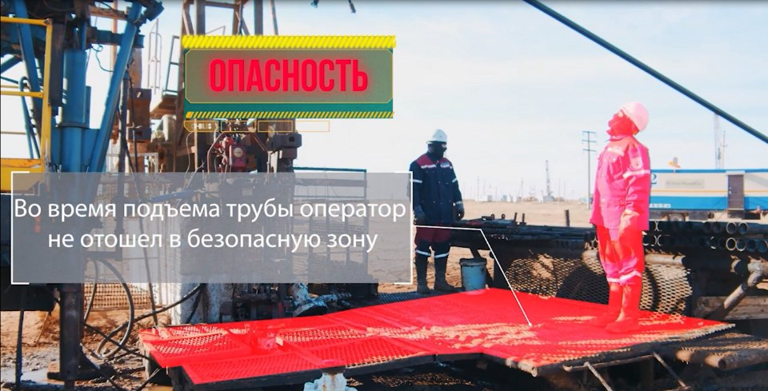
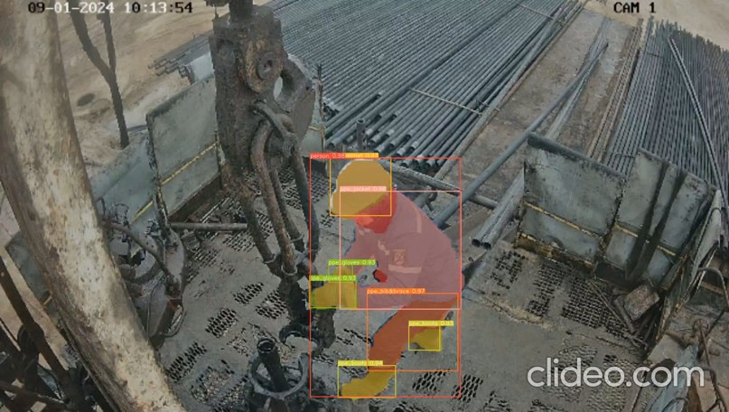
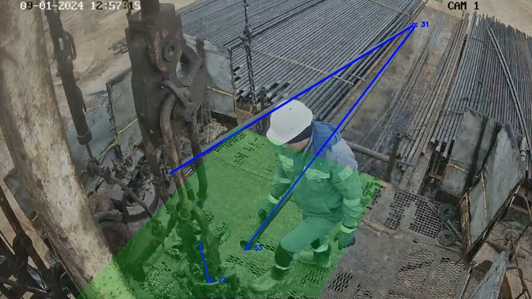
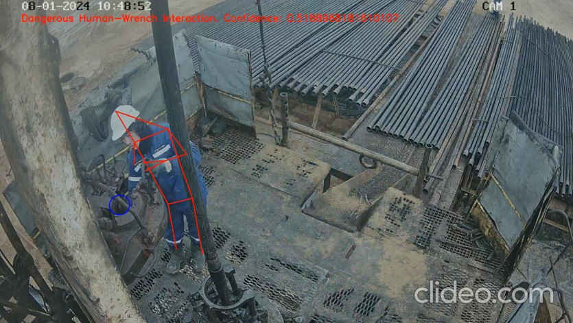
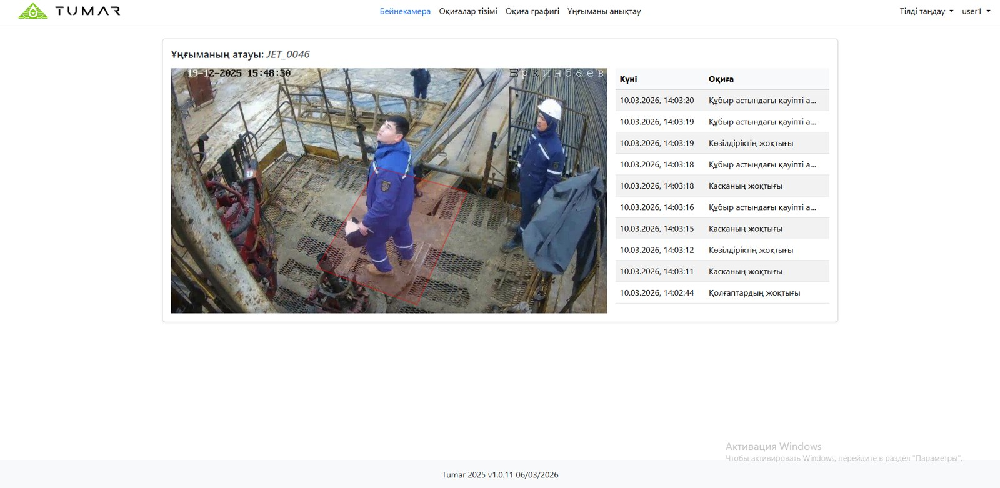

TUMAR
Автоматизированная интеллектуальная система по производственной безопасности
Компьютерное зрение на бригадах подземного и капитального ремонта скважин: СИЗ, опасная зона при спуско-подъёмных операциях, работа с гидравлическим ключом. Предупреждает светом и звуком до того, как случится инцидент.
Зачем · предпосылки создания
Спуско-подъёмные операции — самая опасная работа на скважине

Во время подъёма трубы оператор не отошёл в безопасную зону. Такие ситуации человек-наблюдатель замечает не всегда, камера с ИИ — каждый раз.
Все несчастные случаииз них на ПРС / КРС
16%все случаи
Падение предметов
27%ПРС / КРС
29%все случаи
Воздействие движущихся, разлетающихся предметов
38%ПРС / КРС
55%все случаи
Прочие виды происшествий
35%ПРС / КРС
На ремонте скважин доля травм от падающих и движущихся предметов заметно выше, чем в среднем по производству. Принцип нулевой терпимости к потерям требует убрать человеческий фактор из наблюдения.
Что делает система · три модуля компьютерного зрения
Камера видит нарушение и предупреждает бригаду

01
Контроль средств индивидуальной защиты
Автоматически распознаёт, есть ли на работнике каска, защитные очки, перчатки, куртка, штаны и обувь. Нет элемента — событие в журнале и сигнал бригаде.
каскаочкиперчаткикурткаштаныобувь

02
Контроль опасной зоны при спуске и подъёме труб
Пока идёт технологическая операция с НКТ, система следит, чтобы никто не находился в опасной зоне у устья. Вошёл — свето-шумовая сигнализация.
Детекция · сегментация зоны

03
Контроль работы с гидравлическим ключом
Анализирует позу и движения рук у ключа, отличает опасные периоды работы от безопасных и предупреждает травмирование рук.
Анализ поз · опасное взаимодействие
Как устроено · оборудование на скважине и данные
От камеры на устье до сигнала бригаде — на месте, без интернета
Комплект на бригаде ПРС / КРС
Взрывозащищённая камерана устье скважины, смотрит на рабочую площадку
Наружная камераобщий план площадки и подъёмного агрегата
ПК видеоаналитикив вагончике мастера: модели работают на месте, поток не уходит наружу
Видеорегистратор и модемархив событий и связь с диспетчерской
Свето-шумовая сигнализацияу устья: срабатывает сразу при нарушении
Журнал событийдата, скважина, кадр нарушения, тип
камера→детекция · сегментация · анализ поз→событие→сигнал бригаде→журнал и отчёт
14 783изображений в обучающем датасете
183 054размеченных объекта по 16 классам
трубыгидроключэлеваторчеловеккурткаштаныкаскаботинкиочкиперчаткинегативные классы
Работает на бригадах ремонта скважин; тиражируется на подразделения ОМГ, КБМ, КТМ и ОМС.
Так это выглядит в системе
